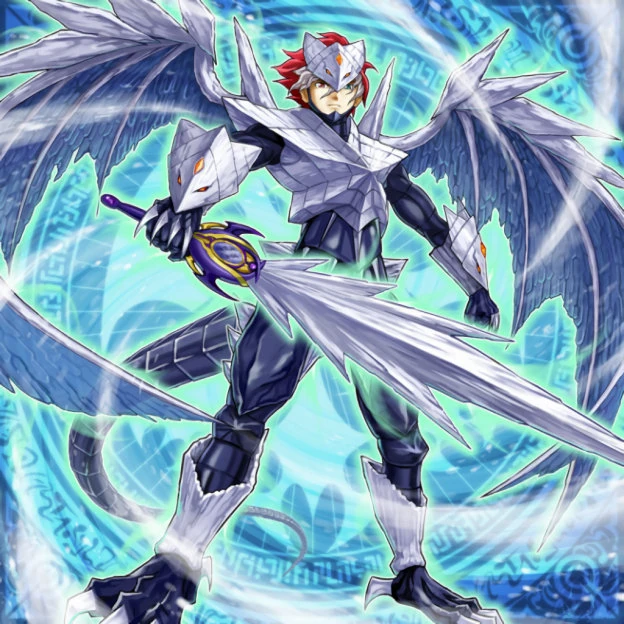
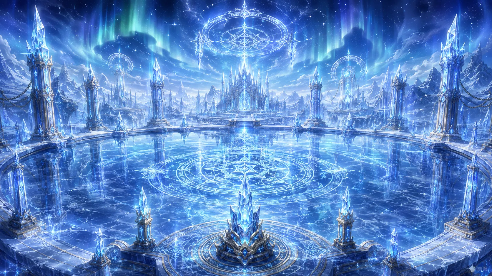

Header + hero
BaseLayout.astro owns one ordered utility row:
Cards → Learn → Blog → Decks
- Cards href = deploy
base. - ≤44rem link padding =
.5rem .25rem. - 400 px budget = 344.5 / 368 px.
- Home art crop =
center 0%.
Header/home polish, native blog chapters, explicit staple identity, sharp dimmed archetype photos. No new runtime layer. No MSE mutation.
BaseLayout.astro owns one ordered utility row:
Cards → Learn → Blog → Decks
base..5rem .25rem.center 0%.blog.mjs extracts renderer-matching H2-H4 IDs. Catalog schema 12 stores them. Both blog routes filter H2 + reuse ChapterSummary.astro.
#id links.Four generic cards change from support affinity to true staples.
archetype: null.role: "staple"; derived support: false.related.archetype becomes empty.main::before keeps photo + flat 60% black veil. Blur leaves.
filter: none.transform: scale(1.01) stays.

| Concern | Owner | Red gate |
|---|---|---|
| header | BaseLayout.astro + header-row.mjs | Vitest + Playwright one-row/overflow |
| chapters | blog.mjs + ChapterSummary.astro | loader parity + click/position e2e |
| affinity | content/identities.json | exact identity/catalog/e2e assertions |
| backdrop | global.css main::before | computed filter/dim/geometry e2e |
No card deletion. No MSE/package/renders/decklist changes. No nested TOC. No client chapter JS. No dim/crop/scale redesign. No package install.